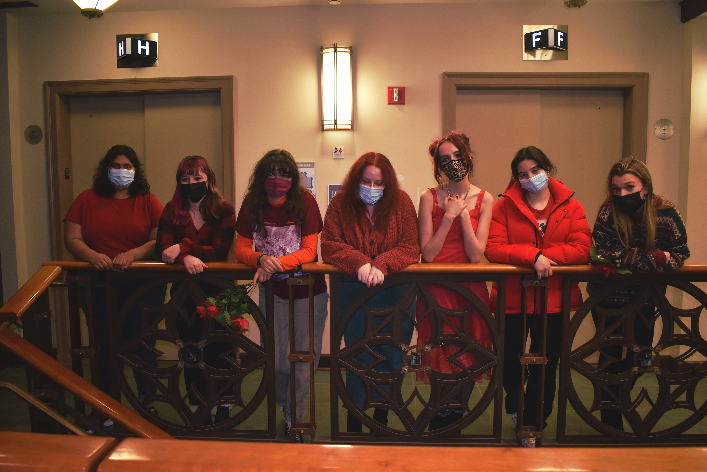

We are Cherry Bomb Lit Mag, a student-run organization at the University of Pittsburgh! We are a relatively young organization, created Fall 2021 by a group of students passionate about art, writing, poetry, and all things creative. We welcome and encourage all Pitt students to submit their art and writing-- you can check out some of the incredible visual art and writing submissions we've received (all credits can be found here). We plan to create and publish two literary arts magazines per year- one for fall semester, and one for spring semester- that are composed of selected art and writing samples. Keep an eye out for our first edition this April!
Additionally, here you can meet our student officers who have worked alongside club members to compile submissions and put together our first edition, as well as help run fundraiser events and organize activities like our Coffee House in the Park.
Our goal as an organization is to encourage the creative expression of students. We strongly believe that everyone should have the opportunity to create, explore various art forms, and be able to showcase their skills and hard work.
